7 速算那些事儿
我不知道我怎样变成了速算神童
那一天放学回家，我路过一间“电脑玩具店”，看到隔壁班的小胖在里边玩电脑空战机。我看他玩得满头大汗，技术不精，我想我如果和他赌，肯定会赢他。于是我就对他说：“小胖，让我们来赌输赢。你跟电脑玩，赢了也不光彩，还是让我们来比一比吧！好吗？”
小胖说：“赌什么东西呢？”
我前次看到小胖给我们看他祖父送给他的一个生日礼物，在一支小小的钢笔身上有一个小小计算器，只要在上面按下按钮，笔身就会显现数位，我们可以一面看笔身的数一面写下来，实在方便。我几次做梦就是梦到这支笔。呶！这真是好东西，我愿意用我的所有玩具和他换那支有计算器的笔。
“我和你赌我爸爸给我的计算器。”我从书包里取出我的计算器，“你看，这计算器是两用的，在要用计算时，可以是计算器，不用计算时，却是一个小放映机，我只要把一盒卡通磁带放进去，你看小银幕上就出现卡通电影。你愿意和我赌吗？”
为了引起他对我这个计算器的兴趣，我放了一盒《米老鼠巧斗大花猫》的卡通片，小胖看到那只原来穷凶极恶的大花猫被米老鼠斗得最后落荒而逃，喊着“救命！救命！”地逃跑，高兴得笑起来。
“好，我们拍手讲定！”我们互击双掌。然后把原来电脑空战机的“人—机对玩”的键钮，改按成“人—人对玩”的键钮。
我们开始空战了。我打下了小胖的146架战斗机，85枚火箭。小胖打下我的135架战斗机，90枚火箭。一架战斗机值2分，一枚火箭是5分。我们前面的荧幕出现小胖的成绩是720分，我的成绩是717分。“什么！我输了？！”
我不相信我的眼睛，电脑玩具机一定算错了。我用我的计算器算，我还是717分，小胖是720分！小胖也用那支笔形计算器来算，结果还是一样。我输定了。我把心爱的计算器交给小胖，我却是哭着回家。
没有了计算器，我怎么算老师发给我们的算术作业呢？我记得在阁楼上，有一个大铁箱里面装满爸爸小时收藏的心爱东西。我有一次和爸爸上阁楼，他让我看祖父留给他的五十多年前的小学算术课本，里面有一些计算方法。爸爸笑着说：“五十多年前，人们还很少用计算器，因此学生要会计算，这真是麻烦透顶，许多学生要背乘法表，要学一些快速计算的方法，现在好了，我们有计算器，用手按按键钮就行，不需要那些复杂的计算。”
“我的小子，你真是好命！生在这21世纪的时代！”这是爸爸常说的话。我是真的好命吗？
我瞧那变黄的祖父小时读的算术书，真是替祖父难过。你知道吗？那时候的小孩子，算术做不好是要被打屁股的。听说有些小孩屁股打得红肿，坐在木板凳上不能动，一动就痛。我真是幸运，没有生活在那个不幸的时代。
三十多年后我看德国电影《测量世界》（Die Vermessung der Welt）描写18世纪末德国的两位古怪天才，分别是博物学家洪堡与数学家高斯，用着各自的方式在进行着“测量世界”，直到最后两人的生活才有了交集。高斯时代算术做不好也是要被打屁股的。
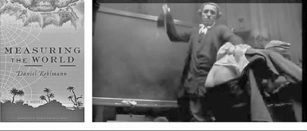
电影《测量世界》中小高斯被打屁股
现在可糟了，我把爸爸给我的计算器输掉了。我又不会算，我必须去找祖父的算术课本来学不用计算器的算术，不然我的作业可交不上了。我爬上阁楼，偷偷打开爸爸的铁箱子，把祖父的算术课本找出来，然后躲进我的房间从第一页开始学起，祖父时代学算术真是难，加、减、乘、除都要用手算，要用心记乘法表，我学得很辛苦。可是我不学不行，真是到了“狗急跳墙”的地步。
连续四天我都不敢出去玩，回到家就乖乖地留在房里读祖父的“天书”，在那书上有一个“交叉乘法”，说是可以用来说明快速算大数的乘积。
“6 943×7 859等于多少？”
我的天，以前的孩子可以用这种方法快速计算。
它的方法是先记要乘的数的交叉线
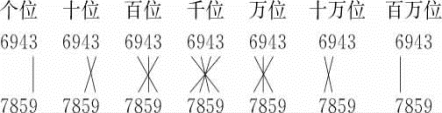
然后照下面的步骤做：
（1）9×3＝27写下7，进位2，先写下7；
（2）进位2
5×3＝15
4×9＝36
相加得53，写下3，进位5，这时纸上记下37；
（3）进位5
3×8＝24
4×5＝20
9×9＝81
相加得130，写下0，进位13，这时纸上记下037；
（4）进位13
3×7＝21
4×8＝32
9×5＝45
6×9＝54
相加得165，写下5，进位16，这时纸上记下5 037；
（5）进位16
7×4＝28
6×5＝30
9×8＝72
相加得146，写下6，进位14，这时纸上记下65 037；
（6）进位14
7×9＝63
6×8＝48
相加得125，写下5，进位12，这时纸上记下的数是565 037；
（7）进位12
7×6＝42
相加得54，写下54，这时纸上的数字是54 565 037，就是6 943×7 859的结果。
我开始练习玩这些数字游戏，看来数字变成了我的朋友。两个星期后的周末，妈妈要我陪她一起去超市买东西，我们选购了所要的食物和用品，然后去收银台扫码付费。可是在记录了6件东西之后，收银机的价钱显示幕突然一下闪光就暗掉。
“见鬼！这收银机烧坏了。”售货员咒骂起来。他连忙拿了一本记事簿，把数字一样一样记在纸上，然后开始算。算了一次，为了慎重再重算一次，结果两个数字不一样。“该死！怎么会有不同结果呢？”
他再算一次，虽然超市内有空调很凉爽，可是他却涨红了脸，额头冒汗，算出结果，他搔搔头：“我的妈！这3个结果都不一样。”他发呆了。
“夫人，请你把这手推车送到另外的服务台，我的收银机坏了，我不能工作。”
“叔叔！请你给我看簿子的数位，我会计算。”
售货员把簿子拿给我，我用笔很快就算出来，应该是付156元8角5分。售货员不相信我的结果，他把一车的食品和用品送到另外一个服务台去，收银机算出的结果也是“156．85元”。
“哇！你这小子真棒。来！请你吃巧克力糖。”
售货员叔叔从衣袋掏出一个巧克力棒送给我。
妈妈高兴得吻了我：“我的孩子多聪明。他懂得计算！”我也感到很得意。
晚上我们全家吃过晚餐后一起在客厅看电视。我最喜欢的节目是《天才的寻获》，爸爸看一下就回书房工作。节目里面有一个5岁的小娃娃会指挥一个乐团演奏贝多芬的《命运交响曲》，另外一个7岁的小姑娘已经写了50首儿童歌曲，然后荧光屏上出现“速算神童”四个大字。
“亲爱的观众们！大家都知道不用计算器和电脑来计算，这是多么难的一件事。今天在幸福超市，我们发现了一个速算神童，他不用计算器而能计算，我们已经从超市经理那儿买下监控所拍摄下来的整个事件的录影带，现在请大家来欣赏。”电视传来播音员亲切的声音。
哎呀！那就是今天我们在超市买东西的经过。妈妈高兴地叫起来，跑去书房把正在构想新的电脑记忆存储设计的爸爸拉了出来。“快看，我们的宝贝孩子上电视了！”
电视台放映的就是我们买东西和我做计算的录像。电视一放完，就听播音员说：“现在让我们通过人造卫星传播在荷兰阿姆斯特丹的现年72岁的计算专家克莱因先生（威廉·克莱因），这位被公认为20世纪的‘活电脑’对刚才事件的反应及意见。”
速算大师威廉·克莱因
首先让我介绍一些克莱因先生的事迹。克莱因先生1912年诞生在荷兰的一个犹太医生家庭，父亲希望他继承父业学医，可是他却对表演艺术更有兴趣。为了不违抗父亲，他很辛苦地念他不感兴趣的医学，在25岁时父亲去世，他也就不念医了。
“克莱因先生对计算的兴趣开始于8岁，当他学了因数分解之后。他回忆：‘在学校，我们不得不分解高达500的数，然后我继续为10 000，15 000，20 000，25 000因数分解。克莱因虽然从未学习乘法表，但在计算过程中，他逐渐掌握了反复遇到的相同的组合，高达100×100。他称之为‘机械记忆’。他说：‘乘法和平方高达1 000我只是作为一个游戏了。心中记忆高达150的对数表，但我从来没有记忆乘法表，它是来自因数分解的经验。’”
“他已经学会了高达100×100的乘法表，高达1 000的平方，高达100的立方，知道10 000以下的所有素数。他记忆150个整数以10为底的对数到小数点后5位，一些以e为底的对数，他也知道。此外如至2的第32次方、2到20的三次方等，以及很多的数学历史。”
“第二次世界大战爆发，他有两年在一间犹太医院工作，因为其他医院不收容犹太人。过了不久，占领荷兰的德国人把在医院里的犹太人送去集中营，克莱因先生就必须躲藏起来。他的亲弟弟不幸被送去德国的集中营，再没回来。他的弟弟受他影响，小时也能作快速的计算。”
克莱因不愿回想起这段悲伤的事件，他说：“我不得不躲起来。有人照顾我，只是说这是像安妮·弗兰克（Ann Frank）的情况，这已经足够了。”
年轻和年老的克莱因
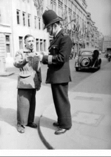
在英国对警员表演速算
“战后由于他的家产被德国人充公，他穷得不名一文。他不想从事医学的工作，战后人们都想要忘记痛苦和可怕的过去，娱乐表演很盛行。他就变成一个表演计算的流浪艺人，在比利时、法国、英国、荷兰演出。”
“他曾在马赛和吞火的艺人、算命的女人、耍猴子的艺人联合演出，他表演的是开立方根。他在巴黎的地铁入口处及红磨坊附近表演，不时遭到警员的驱赶，后来政府以他没有工作准许证为由把他驱逐出境。”
“在火车上，他遇到了一位见过他在巴黎皮加勒广场（Place Pigalle）表演的比利时人。这名男子住在靠近法国边境的蒙斯市（Mons）。他说，他在比利时有关系，通过他可以在学校举办巡回演讲。他们给克莱因买了一些像样的衣服。后来克莱因巡回在比利时学校讲解速算，得到一点钱日子才好过些，经过3个月的时间，克莱因摆脱了债务。
1952年克莱因在荷兰阿姆斯特丹的数学研究中心做‘活电脑’，帮数学家或物理学家计算。克莱因和五个重改革派的荷兰归正教会的成员坐在一个房间里，这些人总是在谈论上帝和神职人员。克莱因会说‘天哪’和‘他妈的’。
同事去向老板抱怨：‘克莱因像一个码头工人那样咒骂说脏话。’老板告诉他们，‘不要吵，让他发誓不再说脏话。’他们说，‘是的，但是……’
于是老板叫他来：‘听着，克莱因，你得忍受，安静下来。我知道他们是白痴，但尽量得把工作做得更好。’
‘但你知道我尝试得很辛苦。’克莱因回答。
每当重要人物参观数学研究中心，克莱恩会被叫去作一个吸引人的表演示范。有一天，联合国教科文组织一位官员（同时是一位法国教授）看见他的表演，问他是否想去巴黎，如去的话，可以在索邦大学数学系演讲。克莱因答应前往巴黎。
在索邦大学数学系，本来计划50分钟的演讲延长到两个小时。以前法国把他驱逐出境，这次的演讲很成功，克莱因因此获得许可，可以在整个法国中小学校讲学。
克莱因写信给数学研究中心要求请假两个月左右，他们回答说：‘维姆（Wim，克莱因名的简称），恐怕这意味着你不会回来——你会停留两年多，但我敢肯定，你将获巨大的成功。’
这样他就到法国的学校去表演计算，然后又跑回去参加一个像马戏班的演出，到处流浪。”
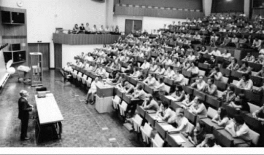
克莱因在欧洲核子研究中心表演计算
曾有人给了他57 825和13 489两个五位数要他乘，他在44秒就给出答案。
“两年后他又回阿姆斯特丹的数学研究中心工作。1958年他到瑞士学校讲演他的速算。经过日内瓦时，他以为为设在日内瓦附近的欧洲核子研究中心（CERN）的一些实验作计算属荷兰阿姆斯特丹的数学研究中心的任务，因此到了日内瓦他就打电话给欧洲核子研究中心说他要参观该研究组织。他到了之后才发现误会了，主管的是一个荷兰籍物理学家贝克（C．J．Bakker）。贝克希望他能来欧洲核子研究中心工作一小段时期，他待在那里4个星期之后，欧洲核子研究中心决定永久雇用他。”
“从1958年到1965年电脑的使用还不普及，许多欧洲核子研究中心的物理学家也不会写程序，因此他就替他们做大量的复杂计算，不用纸笔，许多计算都在他的脑子里进行。他有一些计算破了纪录，被登在《吉尼斯世界纪录大全》里。
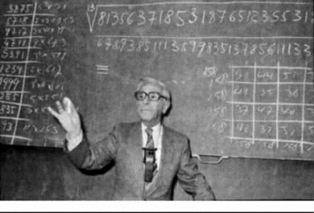
克莱因表演计算一个大数字的13次方根
据1976年8月27日报道，他用2分43秒计算了一个500位数字的73次根。
这一壮举被记录为吉尼斯世界纪录。
克莱因不断刷新他的500位数字的73次根纪录，1979年9月在美国罗得岛普罗维登斯，他用3分25秒的时间完成；1979年11月在巴黎，用3分6秒；1980年3月在荷兰莱顿，用2分45秒；1980年5月在伦敦英国广播公司（BBC），用2分9秒；1980年11月10日在柏林，用2分8秒。最后，1980年11月13日，他两次表演分别用时2分钟和1分56秒。1981年4月7日，在日本筑波国家高能物理实验室，他创造了1分28．8秒的新纪录。
他真是个奇迹，人们把一些大数字让他乘，人们在黑板上写下乘式，乘式写完他就开始口述答案，像电脑一样快。
曾经有人称赞他：‘你是20世纪最伟大的心算专家。’可是他却回答：‘我不是世界最伟大的计算机，却是世界最快的计算机。’他在64岁时退休，以后偶尔在学校教小孩速算，可是进入21世纪大家都用计算机，计算的艺术被淡忘，人们也渐渐忘记了这位20世纪的奇人。现在请大家看这位老先生。”
播音员讲述的时候，电视台放映了克莱因30多年前在欧洲核子研究中心的公开演讲。我们看到观众随便讲两个日期，克莱因在黑板上计算一个人在这之间有多少次心跳会发生。他用法语复述观众的问题，计算时用荷兰文。
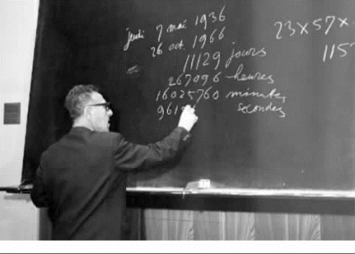
克莱因在计算一个人在一段时间有多少次心跳
“以下我们来看看克莱因先生在1976年12月10日于欧洲核子研究中心退休前最后的表演吧。”
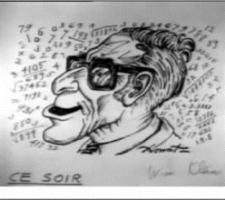
克莱因表演的海报
“一个物理学家画了晚上克莱因表演的海报，欧洲核子研究中心的演讲大厅人山人海。”
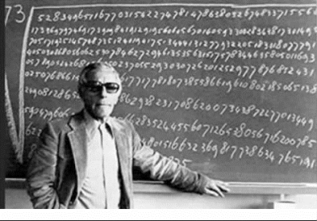
1976年被记录在吉尼斯世界纪录的计算
演讲大厅里的听众喊道：“35×27×42×41。”
克莱因用粉笔在黑板上写这组数字，喃喃自语了几秒钟后，他写下了答案：“1 627 290”，人们给予非常热烈的掌声。
“一个物理学家要他计算64的次方一直到10次。
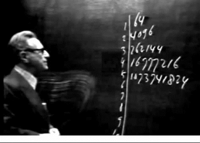
克莱因计算64的2—10次方
只见他在黑板上从上向下写1，2，3，4，…，8，9，10。然后在旁边画一条直线，1的旁边写64；2的旁边写642，亦即4 096；3的旁边写643，亦即64的立方262 144，644即16 777 216，…，一直到64的10次方。”
人们同样用电脑算，结果速度比他的计算慢。
我看他这么快地乘出来，都看傻了眼。
妈妈激动地拍爸爸的背，高喊：“哇！厉害！厉害！真厉害！比电脑快！”
爸爸是搞电脑的，他说：“1976年的电脑已经算得很快，克莱因先生计算能够和电脑一样快，已经很不容易！而他能击败电脑，真是奇妙得不得了！”
克莱因可以在1分钟之内，把四或五位数分为几个平方数的和。
有一个科学家给整数2 534，要他分解为平方数的和。
只见他马上写2 534＝502＋52＋32。
再写492＋92＋62＋42。
然后写482＋122＋92＋22＋12。
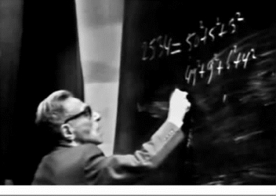
克莱因将2 534分解为平方数的和
克莱因除了数之外，还喜欢音乐。他特别喜欢爵士乐和古典音乐。他说：“两年前我在纽约，每天晚上我去吉米·瑞恩的爵士乐俱乐部（Jimmy Ryan's Jazz Club）。最近当我回纽约，突然出现在爵士乐俱乐部时，他们会说，‘嘿，飞行荷兰人（Flying Dutchman，克莱因的艺名），怎样了？喝一杯，准备玩什么？’”
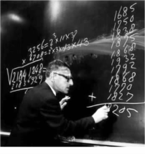
克莱因将一些年份加起来
他能记住150位作曲家的出生日期和死亡日期，他有一个表演，观众给一个音乐家的名字，他就会一面唱这音乐家的歌曲一面写他的出生和死亡年份，比方给莫扎特，他就唱《魔笛》，写1756年，1791年；给贝多芬他就唱《命运交响曲》，写1770年，1827年；给约瑟夫·施特劳斯（Josef Strauss），他就唱《奥地利村燕圆舞曲》，写1827年，1870年；给埃克托·柏辽兹（Hector Berlioz），他就唱《匈牙利进行曲》，写1803年，1869年；然后把这些数加起来。
现在出现在我们面前的是一个有银白头发的老先生，他用一条被单围在他的上半身，好像是很冷的样子。
“我早在30多年前就说了，人类发展电脑，结果我们变成电脑的奴隶。在作高等物理研究时，到月球去及作太空旅行等绝对需要大电脑，可是有了放进口袋的计算器，小孩子再不会4×12的计算了。
每一个人生下来都能记一些数字，可是不利用不练习，这记忆就会消失了。在我年轻时，甚至50多年前，在小学还有教心算。可是现在全完了，我感到很难过。”
克莱因先生嘶哑的声音说到这时竟然有些抖动，他用手擦流下来的眼泪。
“对于我来说，数字是我的朋友。可是对一些人来说这是另外一回事。例如3 844，对于你们只不过是3，然后8，然后4，然后4，没有什么意义！可是对于我，我会说：‘嗨，你是62的平方！’”
这老头子眨着聪慧的眼睛露出狡黠的笑容。
“我的老朋友新西兰人亚历山大·艾特根（Alexander Craig Aitken，1895—1967）教授是一位诗人、小提琴手、作曲家和数学家。
1954年，我们在阿姆斯特丹一个数学会议上相见。后来在这一年，我们一起出现在英国广播公司（BBC）的节目中。他是一个可爱的人，他说他把80%的时间放在他喜爱的音乐，而只是用20%时间搞数学。他也是20世纪有名的速算专家，可是他在1967年去世了，愿他的灵魂得到安息！
艾特根小时候并不喜欢算术，在读中学时他听到教代数的老师说用公式
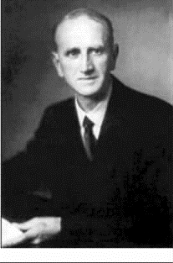
艾特根教授
a2－b2＝（a＋b）（a－b）
可以算平方，比方说要算47的平方，取a＝47，b＝3，我们就先算47＋3＝50和47－3＝44的乘积，这是很容易算出得2 200，然后加上3的平方，我们得2 209。从那时起，他的头脑就开窍了，他发现了这个自由的王国，以后常常练习，变成速算专家。”
“刚才电视转播的小朋友，老实说他并不算得很快。在50年前，任何一个小学生都能作这样的计算，只可惜在1984年，我们的小学不再教孩子计算，能计算的孩子就像熊猫那么稀少。”
“我呼吁教育界应该在这方面‘回到过去’！回到过去并不是倒退。现在的孩子花太多时间去玩不用动脑筋的电脑玩具，这对智力发展是有妨害的，另外不接触数字，以后他也不喜欢抽象思维，对科学的发展来说也是不太好。我是希望更多人能关心这事情。”
播音员说：“我们希望观众对这事情提出看法，我们记录下来，可以给教育部门提供意见。”
爸爸妈妈两人对克莱因老先生的话有不同的看法。
妈妈说：“我最怕计算，太伤脑筋会早生白发。有了计算器，小孩子就不必伤脑筋，他们就能更好地学习，脑瓜子不会疲劳。这老先生就和所有的老头子一样，患了怀旧病，什么都是过去的好，现在比过去糟糕，讲的都是废话。”
爸爸说：“我不同意你的看法。我小时还做一点计算，现在不用计算器，我还可以算不太大的数的加、减、乘、除。可是你看，现在的青年却连简单的加法也不会算，这的确是严重的问题。克莱因先生讲的还是有些道理，我们不能因计算器普及，丢掉了我们本来应该有的基本计算能力。”
不服输的妈妈和爸爸争辩起来，我怕爸爸会问我为什么突然会计算的真正原因，趁他们不注意，赶快溜回我的房间去。也就是从那日开始，“速算神童”的名称就落到我头上了。
【2013．6．24后记】这篇数学故事写于1984年，当年看到我的美国硕士生在小考时不用计算器，有30%会算错，觉得这是一个严重的问题，于是用克莱因的事迹编了这个故事。当时我预言他活到93岁，他在1976年12月退休，之后的10年在阿姆斯特丹过着活跃的生活。1986年8月1日，克莱因在他的家中被人残忍地用刀杀害。荷兰报纸以大标题“天才的死亡”报道他不幸死亡的消息。27年过去了，荷兰警方一直没有确定凶手。我重新改写这故事以纪念这位我十分喜欢的人物。
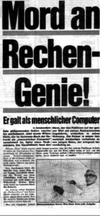
荷兰报纸报道克莱因不幸死亡的消息
2012年12月4日是克莱因诞生100周年。欧洲核子研究中心发表文章“与威廉·克莱因相逢——CERN 的人类超级电脑，2012 年12 月5 日”（Meet Wim Klein——CERN's human supercomputer，December 5，2012）纪念他，读者可以上网看：
HTTP：//www．isgtw．org/visualization/meet-wim-kleincerns-human-supercomputer。
【2017．1．1后记】衷心感谢萧文强教授的帮助！